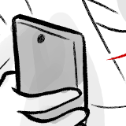

<header><h1><a href="{{site.url}}">404</a>/debug</h1></header>

<main><div class="center"><a href="1"></a><a href="2"></a><a href="3"></a><a href="4"></a><a href="5"></a><a href="6"></a><a href="7"></a><a href="8"></a><a href="9"></a></div></main>

<!--to be converted to an all-purpose archive layout with includes-->